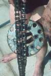

A good sprocket tooth is the same shape on both sides with a rounded top. As the chain wears, the teeth wear into a hook or wave on one side, get thinner and come to a point (sometimes called shark-fin teeth). Worn teeth let the chain ride up and jump, and they wear a new chain quickly. A worn rear sprocket nearly always means the chain and front sprocket are worn too.
Is it safe to ride?
Ride with care if the teeth are only worn. Do not ride with broken or missing teeth: the chain can jump off and lock the wheel.
Quick checks first
- Look at the rear sprocket teeth from the side, all the way round.
- Look for any broken or chipped teeth.
- Check the chain adjusters: far back means a long, worn chain.
Diagnose it step by step
1Are any teeth broken, chipped or missing?
- Yes: do not ride. Replace the chain and sprockets.
- No: go to step 2.
2Are the teeth hooked, wave-shaped, thin or pointed, or worn by about a quarter of a tooth? (K-Light 125 replacement point.)
- Yes: the rear sprocket is worn. Go to step 3.
- No: go to step 4.
3Check the front sprocket and chain (Inspect sprockets, Check the chain for wear). Are they worn too?
- Almost always yes. Replace the chain and both sprockets together. The K-Light manual warns that a new chain on a worn sprocket, or the other way round, wears out fast. Replace the chain and sprockets.
4Is the wear only on one side of the teeth (one face polished, the other not)?
- Yes: the chain runs at an angle. Check the wheel alignment and the sprocket for bending: Check and adjust chain slack, Check chain guides, sliders and guards.
- No: go to step 5.
5Does the sprocket wobble when the wheel turns, or move a lot when you rock it against the wheel?
- Wobble or loose nuts: Inspect sprockets.
- Large rocking movement: worn cush rubbers, see Clunk or snatch from the rear wheel.
What makes sprockets wear fast: a dry or dirty chain, a chain set too tight, a misaligned wheel, and fitting a new chain on old sprockets.
Causes, most likely first
| Cause | How to confirm | Fix |
|---|---|---|
| Normal wear with an old chain | Hooked teeth, chain worn | Replace the chain and sprockets |
| Poor chain lubrication | Dry chain, fast wear | Clean and lubricate the chain |
| Misaligned wheel | One-sided tooth wear | Check and adjust chain slack |
| Bent sprocket or loose nuts | Sprocket wobbles | Inspect sprockets |
| Impact damage | Broken teeth after a stone or chain jump | Replace the chain and sprockets |
Reference values (K-Light 125)
| Item | Value | Source |
|---|---|---|
| Sprocket replacement point | About a quarter of a tooth worn, or bent | K-Light 125 manual, PDF p. 177 |
| Rear sprocket | 41 teeth | K-Light 125 manual, PDF p. 158 |